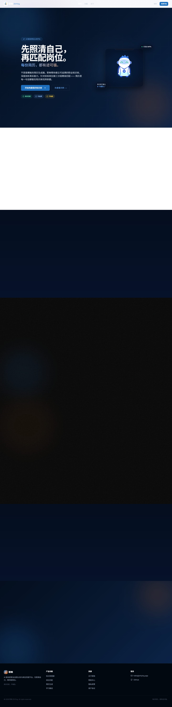

OPEN SOURCE / PROJECT FIELD NOTES
职映
把真实经历，整理成更清楚的求职方向。
本页为静态项目导览，截图来自真实生产构建的公开首页。完整知识库、登录和AI生成依赖使用者自行部署服务及配置数据库/模型。
从源码运行 ↓
01 / EXPLORE
从问题，到实现。
经历与知识库
源码提供知识库与经历相关页面和接口。演示资料不代表真实用户内容；完整数据读写需要自己配置Supabase。
02 / RUN LOCALLY
把项目带到你的环境。
以下为运行入口；数据库、服务密钥与平台账号由使用者自行配置。复制命令前先阅读仓库README的完整前置条件。
获取源码
git clone https://github.com/yangwei251003/zhiying.git安装与开发
cd zhiying
npm ci
# 按README填写自己的环境设置
npm run dev公开体验的范围
本页为静态项目导览，截图来自真实生产构建的公开首页。完整知识库、登录和AI生成依赖使用者自行部署服务及配置数据库/模型。
本页面提供项目说明、源码入口与真实画面，不提交登录信息、不请求AI模型、不接触支付或私人数据库。应用的完整行为以源码及README所列部署方式为准。
阅读README与验证边界 ↗